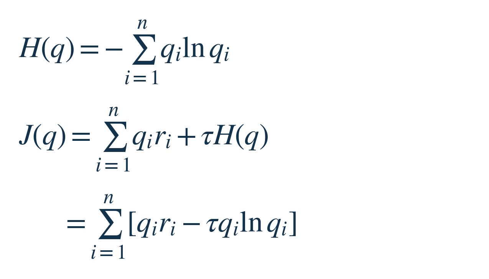
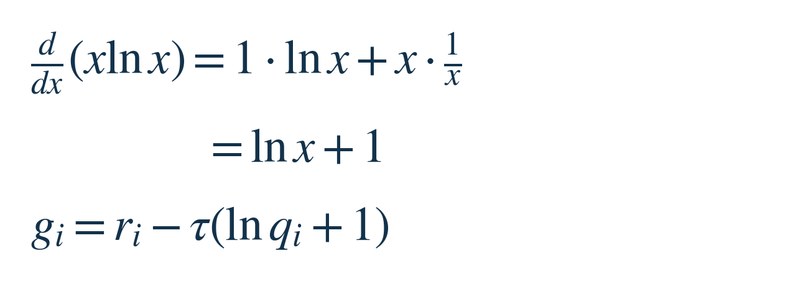
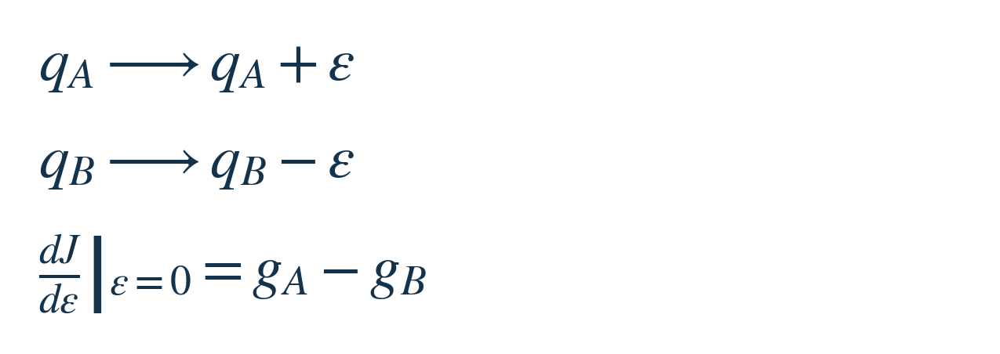
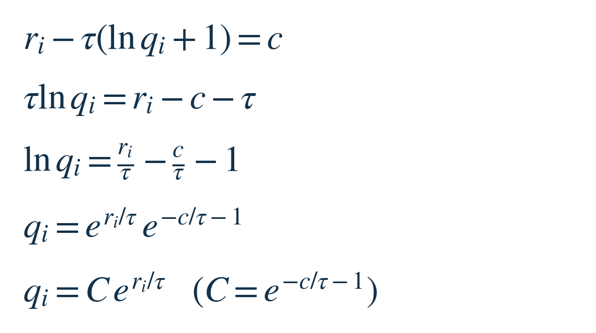
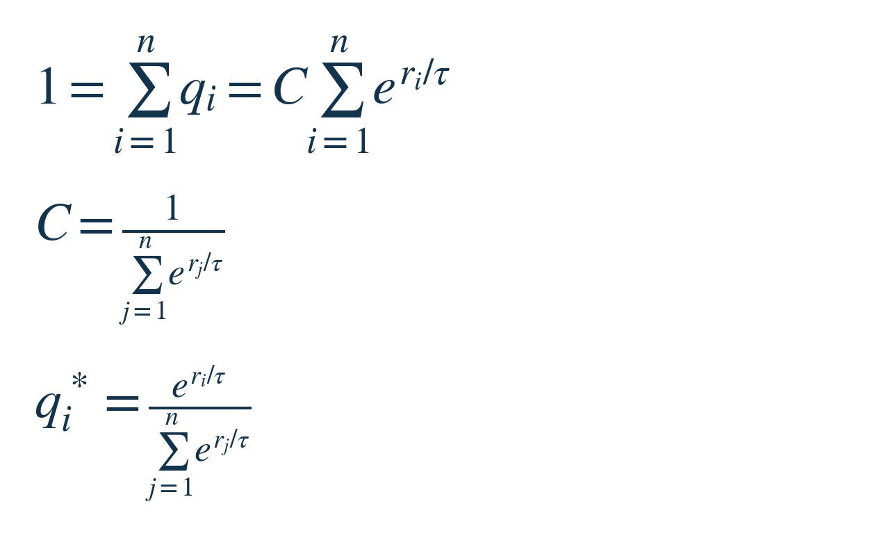
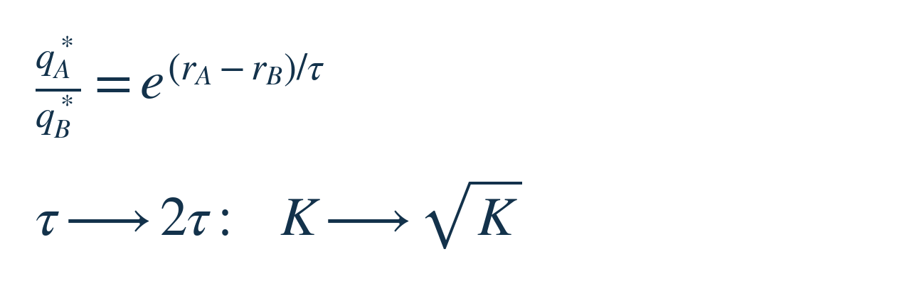
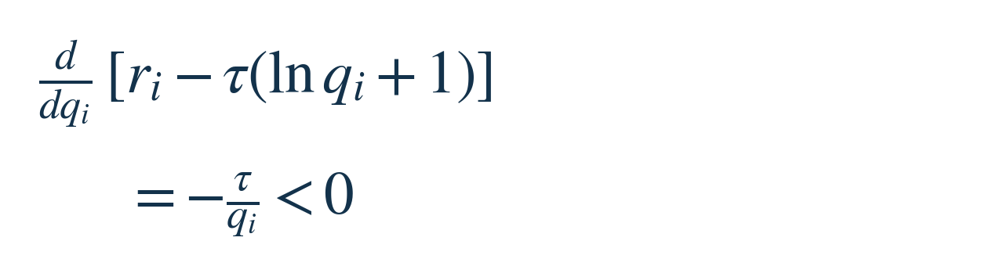

每周探索 · 数学共性小课 002
Softmax：如何在平均得分与选择分散度之间取舍
2026 年 10 月 2 日 · 修订版 · 主线约 8 分钟
同一个情境下，有 n 个候选动作，每个动作有一个当前评分。你要制定一套选择规则：下次遇到这个情境，各动作分别以多大概率被选中？例如，让一个推荐策略偶尔尝试当前评分略低的候选，而不是永远锁定当前第一名。
如果唯一目标就是拿到最高的当前评分，直接选最高分即可。这里多加一项设计要求：愿意牺牲一部分平均得分，换取选择机会不那么集中。接下来要算的是：怎样给这项取舍定价，以及这个定价规则为什么会导出 softmax。保留机会有助于产生不同选择，但它本身不等于已经证明长期探索效果更好。
先把要决定的东西写清楚
把第 i 个动作的固定评分记作 ri，把分给它的选择概率记作 qi。q 是全部概率组成的一套方案。每个 qi 必须非负，所有 qi 相加必须等于 1；候选数 n 有限，所有评分也有限。本课只调整 q，暂时不更新评分。
一次选择会落到某个动作上；q 描述选择之前的规则。按这套规则反复选择，平均评分的期望就是把每个 ri 按 qi 加权后相加。如果当前评分只是模型估计，这个平均数也是按当前估计计算的，不保证等于真实收益。
为了给“选择不要过度集中”一个可计算的奖励，本课选用 Shannon 熵 H(q)：对每个概率取负的自然对数，再按该概率加权求和。ln 是自然对数。约定概率为 0 的那一项按极限取 0。只选一个动作时，熵为 0；在固定 n 个动作间均匀选择时，熵最大。它不偏袒任何动作标签。
这是我们选定的分散度指标。需求本身并没有规定必须用熵：也可以规定最低探索比例，或用其他分散度惩罚；那会得到另一个优化问题。[1]
现在引入正数 τ（tau），表示我们愿意为一单位熵付多少评分。把两项加在一起，得到给整套概率方案打分的目标 J(q)：


为什么要最大化 J？因为我们已经决定同时奖励平均得分和熵。比较两套方案时，若新方案的熵增加 ΔH、平均得分下降 ΔR，那么它的总评分变化就是 τΔH−ΔR；只有熵奖励足以补偿得分损失，新方案才更好。J 把这项明确的偏好写成了比较标准。它不是凭“需要一个概率”就能推出的物理定律。
若 r 以“分”计，H 使用自然对数、以 nat 计，τ 可读作“分/nat”，两项因此能相加。机器学习里常把这些量当无量纲数；仍需记住：分数尺度改变、τ 不变，就等于改变了取舍。τ 也叫温度，后面会看到它怎样改变概率。
从 B 挪一点概率给 A，会发生什么？
先在所有概率都大于 0 的区域找候选解，算完再验证它确实优于其他分配，包括有零概率的边界。关键是：总概率固定为 1，给 A 多一点，就得从别处扣回同样多。
先算一项自己的变化率，再把“一增一减”合起来。把第 i 项对自身概率的变化率记作 gi。计算时，先令 x 代表一个正概率。对 x ln x 求导，用乘积法则：第一部分对 x 求导得到 1；第二部分用 ln x 的导数 1/x。于是：


最后一行的 gi，表示暂时固定其他项、第 i 项概率增加一点时，J 的变化率，也就是这项的“边际收益”。其中 ri 来自得分项 qiri，后半项来自熵奖励。算这个单项变化率只是中间步骤，下一步才处理总和约束。
任取两个动作 A、B，从 B 挪一个很小的量 ε（epsilon）给 A，其他概率不动。ε 可以为正也可以为负，只要改完的概率仍为正。总和自动保持为 1：


A 的概率对 ε 的变化率是 +1，B 的是 −1，所以链式法则给出 gA−gB。若它大于 0，往 A 挪就能提高 J；若小于 0，反过来往 B 挪就能提高 J。只有两边相等，这一对之间才没有能继续提高目标的微小挪动。
A、B 可以是任意两项。因此，内部最优点必须让所有 gi 相等。把这个共同值记作 c。注意：约束要求的是这些变化率彼此相等，并不要求它们各自等于 0。
相同的边际收益，怎样变成指数权重？
将刚算出的 gi 写成等于 c，逐步解出 qi。先展开括号并移项，再除以正数 τ：


第三行变第四行，只做了一件事：两边取指数。因为指数和自然对数互相抵消，exp(ln qi)＝qi；又因为 exp(a+b)＝exp(a)exp(b)，所以右侧拆成两个因子。exp(x) 和 ex 是同一个记法。
其中，exp(ri/τ) 随动作改变；exp(−c/τ−1) 对所有动作相同，把它记成正数 C。于是我们已经确定了各概率的相对大小：每一项都等于自己的指数权重，乘同一个 C。这个 C 还没定，因为刚才只用到了“各项之间怎样挪动”。
最后用总概率必须等于 1 来定 C。把所有 qi 加起来，公共因子 C 可以提出求和号。将求出的分配记作 q*：


第二行求出了 C，第三行把它代回每个 qi，星号表示求出的最优分配。分母里的 j 只是遍历全部动作的下标。这就是 softmax：指数来自对数关系的反解；公共分母来自概率总和为 1。
温度调的究竟是什么？
把 A、B 的概率相除，softmax 的公共分母消掉，再用指数相除的规则。把这对概率的比值记作 K：


真正决定偏好强弱的是“分数差除以温度”。若 A 比 B 分高，二者的概率比 K 就大于 1；把温度加倍，指数减半，概率比变成 √K，更接近 1。这里开平方的是概率比，并不是各自的概率。
固定有限评分时，τ 越小，越偏向最高分；τ 趋近 0 时，概率集中到最高分动作，若有并列则在并列者间均匀分配。τ 趋近无穷时，全部动作趋于均匀。这对应刚开始的取舍：熵奖励越贵，就越愿意让出平均得分。
两个共享这个数学结构的地方
熵正则策略改进。固定状态 s 和各动作的价值 Q(s,a)，把 q 换成动作选择策略 π(a|s)，把 r 换成 Q，把 τ 换成熵系数 α。Q 在这里计入当前奖励和后续含熵奖励的回报。若动作有限、允许自由选择任意分布，那么最大化“平均 Q＋α×策略熵”的这一步，就得到对 Q/α 的 softmax。SAC 的理论推导使用了这一结构；限制在一个神经网络策略族内时，通常只能逼近目标分布，还需要另外学习 Q。[2]
热平衡的 Boltzmann 分布。固定正温度 T、体积和粒子数，先考虑有限个微观状态，状态 i 的能量为 Ei。物理熵为 S＝kBH，其中 kB 是玻尔兹曼常数。平衡时最小化“平均能量−T×物理熵”；把整个目标取负，就对应本课的 ri＝−Ei、τ＝kBT。因此状态概率正比于 exp(−Ei/(kBT))。这里温度有物理意义；两者的对应来自同一个优化结构。[3]
把结论用到别处前，检查这些条件
本课求解的是：固定有限候选、固定有限评分、正的 τ，除“非负、总和为 1”外没有其他约束。若还有容量、组配额或跨样本负载限制，就不能直接认为各自做一次 softmax 已经求得最优。选择概率也不自动等于校准后的真实事件概率。
熵奖励按候选标签计数；把同一个候选复制成两个标签，会改变它得到的合计概率。它因此不保证语义多样性，也没有编码非均匀的先验偏好。若目标或候选计数方式变了，要重新检查推导。
留一个小检查
若所有 ri 都增加同一个常数 b，τ 不变，最优概率会变吗？先从 J 看，再用最终公式核对。
答案：
不变。任意方案的平均得分都增加 b×Σqi＝b，熵不变，所有方案的 J 一起增加 b，优劣顺序不变。softmax 里，每个指数权重都乘上同一个 exp(b/τ)，分子分母约掉后，概率也不变。
选读：为什么这是唯一的全局最大值？
还差一次检查：边际收益相等，通常只说明局部不再有一阶改进，不能直接当作最大值。本题额外有一个性质：每项的边际收益都随自身概率增大而严格下降。对上面的 gi 再求一次导：


沿直线向另一套方案走时，每个概率都以固定速度变化。每项对前进方向变化率的贡献，是它的边际收益乘以这个速度。概率增加时，边际收益下降；概率减少时，边际收益上升，但乘的是负速度，贡献仍然下降。因此，只要方案确实在变，整条路的变化率就严格下降。数学上这叫“严格凹”。
从我们算出的 q* 出发，朝任意另一套合法方案走，起步时的变化率是 0：每项边际收益都是 c，而所有概率增量相加为 0，所以总变化率也是 c×0。继续走，变化率会降到负数，J 便下降。因此别的方案都不能更好；即使终点有概率为 0，到达它之前 J 也已经严格下降；按 0 ln 0＝0 连续延伸到终点，仍不会回到起点的高度。q* 又确实全部为正、总和为 1，所以它是唯一的全局最大值。
原始材料
- Blondel、Martins、Niculae：Learning Classifiers with Fenchel-Young Losses（AISTATS 2019），§2 Definition 1、Examples 与 Proposition 1：负熵正则对应 softmax，也展示其他正则项可产生其他概率映射。
- Haarnoja 等：Soft Actor-Critic（ICML 2018），§3.2 式 (1)、§4.1 式 (3)–(4)：熵正则目标与策略改进中的指数分布。
- David Tong：Statistical Physics，第 1 章 §1.3，Boltzmann 分布、概率熵与自由能。